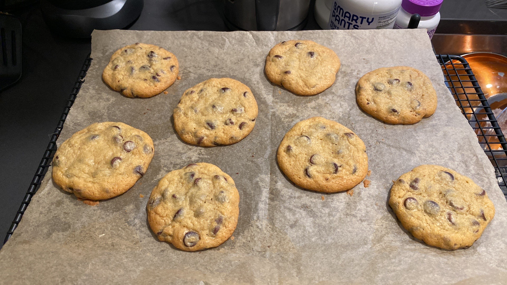

Pouchers

Description
Ingredients
- 170g Softened Unsalted Butter
- 96g Granulated Sugar
- 192g Light Brown Sugar
- 2 Eggs
- 1 Tbsp Vanilla Extract
- 0.5 tsp Salt
- 1 Tbsp Baking Powder
- 300g All Purpose Flour
- 170g Semi-sweet Chocolate Morsels
- 170g Dark Chocolate Morsels
Steps
- With a beater or stand mixer, cream butter, sugar, and brown sugar for 5 minutes.
- Add the eggs and vanilla extract then continue beating for another 5 minutes.
- In a seperate bowl, combine flour, salt, and baking powder.
- Add the flour mixture to the wet ingredients. Using short bursts from the beater or mixer, combine until the flour is only moderately incorperated (there should still be dry spots).
- Add the chocolate and combine using the same method as above.
- Finish incorperating the dough with a rubber spatula.
- Seperate the dough into 24 pieces (about 50g each) and chill for 1-2 hours.
- Preheat the oven to 375F.
- Cover two light colored baking sheets with parchment paper (or one baking sheet for staggered baking).
- Roll each piece into a ball and place it onto the baking sheet. Leave a couple of inches between each ball.
- Bake for 14 minutes, or until centers appear just underbaked.
For Plungers: Chill the dough overnight and bake for 20-24 minutes.